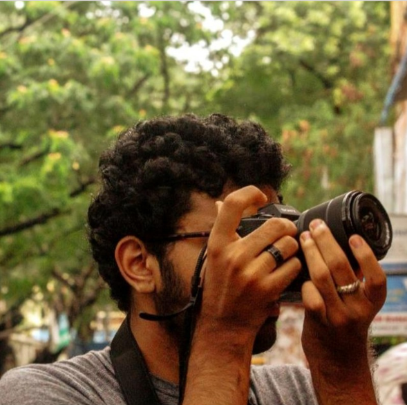

Hi! I'm Agasthya.

I'm an aspiring designer and filmmaker
with two years of experience in both fields.
I am eager to learn visual design and apply
them in real-world problem solving.
I've worked hard to become adept at creative
and content writing, visualization and execution.
Education
LV Prasad College of Media Studies
Bachelors of Fine Arts in Filmmaking (Ongoing)
PAGE Junior College
MPC integrated with Design Studies (2020-22)
DDMS P. Obul Reddy Public School
Schooling under the CBSE Board (2010-2020)
Work Experience
Varna Arts Academy | Freelance Video Production & Editing (2023 Feb – August)
Key responsibilities:
- Visualizing, directing, shooting, and editing music videos
- Curating and designing posters
- Writing content for social media
Key learnings:
- Understanding working in freelance
- Difference in directing music videos and film
- Communicating with and directing the artist
- Color correction and grading
Access Livelihoods | Graphic Design Intern (2023 June – July)
Key responsibilities:
- Designing and writing for social media posts
- Digital icon creation
- Video shooting and editing
- Crafting brand guidelines
Key learnings:
- Understanding Adobe Illustrator basics
- Learning SEO basics
- Designing for social media, as well as products
- Learning brand guidelines crafting
Sākāra | Content and Design (2024 Jan – Present)
Key responsibilities:
- Content for web and corporate presentations
- Product photography
- Graphic and Branding design
Key learnings:
Understanding startup vs corporate approach
Logo Design and Guidelines
Skills
Technical Skills
- Graphic Design
- Content and Creative Writing
- Video Creation
- Adobe Illustrator (Basics)
- Figma for UI/UX (Basics)
Soft Skills
- Communication
- Quick Learning
- Professionalism
- Understanding Trends
I like to do some fun things, too! Click here to know more :)